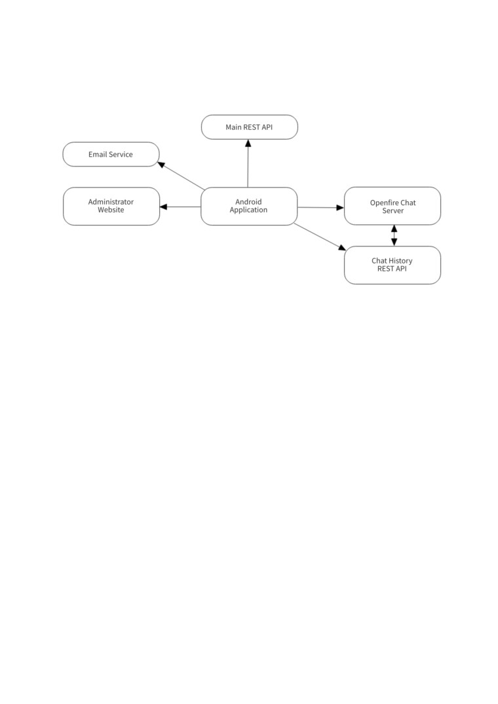
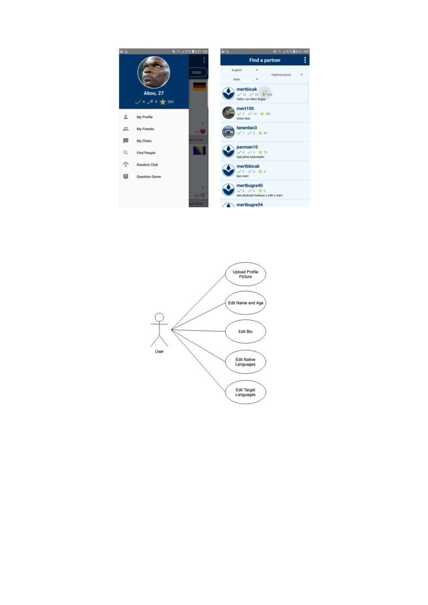

AKDENIZ UNIVERSITY
FACULTY OF ENGINEERING
DEPARTMENT OF COMPUTER ENGINEERING (ENGLISH)
A MOBILE APPLICATION FOR LANGUAGE LEARNING
SENIOR DESIGN PROJECT
Mert Buğra Bıçak
20160808002
June, 2019
ANTALYA
AKDENIZ UNIVERSITY
FACULTY OF ENGINEERING
DEPARTMENT OF COMPUTER ENGINEERING (ENGLISH)
A MOBILE APPLICATION FOR LANGUAGE LEARNING
SENIOR DESIGN PROJECT
Mert Buğra BIÇAK
20160808002
Advisor: Asst. Prof. Dr. Taner DANIŞMAN
Department Chair: Prof. Dr. Melih GÜNAY
Antalya 2019
TABLE OF CONTENTS
ABSTRACT
6
ACKNOWLEDGEMENT
6
INTRODUCTION
7
SYSTEM DETAILS
8
1. Overall Description
8
1.1. Purpose
8
1.2. Operating Environment
8
2. Interfaces
8
2.1. User Interfaces
8
2.2. Hardware Interfaces
13
2.3. Software Interfaces
13
2.4. Communications Interfaces
14
3. Details of the System
15
3.1. Context
15
3.2. Architecture
16
3.3. Basic Functionalities
16
3.3.1. Registration
16
3.3.2. Login
18
3.3.3. Administration
18
3.3.3.1. Banning/Unbanning Users
19
3.3.3.2. Checking Reported Feed Posts
19
3.3.3.3. Check Profile Pictures of Users and Ban Inappropriate Ones
19
3.3.4. Feed Page
19
3.3.4.1. Writing a Feed Post
20
3.3.4.2. Deleting a Feed Post
20
3.3.4.3. Liking/Unliking a Feed Post
21
3.3.4.4. Fixing the Mistakes Made in a Feed Post
21
3.3.4.5. Declaring the Feed Post Correctly Written
22
3.3.4.6. Look Through Corrected Versions of a Feed Post
23
3.3.5. Comments Page
23
3.3.5.1. Writing a Comment to a Feed Post
24
3.3.5.2. Deleting a Comment
24
3.3.5.3. Liking/Unliking a Comment
24
3.3.5.4. Seeing Corrected Versions of the Main Feed Post
25
3.3.5.5. Report the Main Feed Post
25
3.3.5.6. Block the Owner of the Main Feed Post
25
3.3.6. Chat Page
25
3.3.6.1. Sending a Chat Message
26
3.3.6.2. Fix the Mistakes of Chat Partner’s Message
26
3.3.6.3. Declare Chat Message of Partner Correctly Written
27
3.3.6.4. Send a Voice Recording to Chat Partner
28
3.3.6.5. Block Chat Partner
28
3.3.7. Find People Page
29
3.3.7.1. Finding a Partner to Chat With
29
3.3.7.2. Sorting People by Recent Login
29
3.3.7.3. Sorting People by Newest Users
29
3.3.7.4. Sorting People by Highest Points
29
3.3.7.5. Filtering People by Gender
29
3.3.7.6. Filtering People by Language
29
3.3.8. User’s Own Profile Page
30
3.3.8.1. Uploading a Profile Picture
30
3.3.8.2. Edit Name and Age
31
3.3.8.3. Edit Bio
31
3.3.8.4. Edit Native Languages
32
3.3.8.5. Edit Target Languages
32
3.3.9. Another User’s Profile Page
33
3.3.9.1. Adding / Removing Friends
33
3.3.9.2. Start a Chat with a User
33
3.3.9.3. Check out User’s Basic Information
34
3.3.9.4. Invite User to Play the Question Game
34
3.3.9.5. Look at the Posts the User Posted
35
3.3.9.6. Look at the Posts Liked by the User
35
3.3.9.7. Block the User
35
3.3.10. Random Chat Page
36
3.3.10.1. Finding a Random Person to Chat With
36
3.3.11. Question Game Page
37
3.3.11.1. Guessing the Word Picked by Picker
39
3.3.11.2. Asking Questions About the Word
39
3.3.11.3. Picking a Word
40
3.3.11.4. Answering Questions About the Word
41
3.3.11.5. Checking if Guess Made by Guesser is Correct
41
3.3.11.6. Fixing Mistakes made by the Guesser
42
3.3.12. Account Settings Page
42
3.3.12.1. Unblocking Users
42
3.3.12.2. Sending an Email Change Request
43
3.3.12.3. Sending a Password Change Request
43
3.3.12.4. Freezing Account
44
3.3.12.5. Sending Account Deletion Request
44
3.3.13. Contact Page
45
3.3.13.1. Send a Complaint to Administrator/Support
45
3.3.14. Forgot Password
46
3.3.14.1. Send a Password Reser Request by Email
46
3.4. Client Page Flow Chart
47
3.7. Security
47
3.7.1. Use of Tokens
47
3.7.2. Authentication
48
3.7.3. Storing Passwords as Salted Hashes with Bcrypt
48
3.8. Software Quality
49
3.9. Database Models
49
3.9.1. Deciding on which database to use
49
3.9.2. Database of Main REST API
52
3.9.3. Archived Message Table of Openfire Database
53
3.9. Object and Class Models
53
3.9.2. Openfire ChatMessage Class
54
3.11. Logging
54
4. Challenges During Development
55
5. Things Left To Do
55
CONCLUSION
56
RESOURCES
56
ABSTRACT
A Mobile Application for Language Learning
As the world gets more and more connected each day, especially with social networking
applications like Facebook or Twitter, people from different parts of the globe can easily connect
with each other. For those who are learning new languages, there has never been a time with this
much opportunity to meet native speakers, practice with them and learn about their culture. The aim
of this project is to help bring together people from all over the world who want to learn about
different languages and cultures in a friendly environment where they can help each other learn,
grow and have fun by having having conversations and playing games.
In this application, people can express themselves in the languages they are learning on a
global feed and get feedback and suggestions from natives about their mistakes. They can make
friends, chat with and send voice recordings to each other. They will be able to play a word
guessing game where one person picks a word and the other tries to guess it, correcting their
mistakes along the way.
The client is an Android mobile application. The Instant Messaging module of the
application was developed using the Openfire chat server and implemented in the client using the
Smack XMPP Framework for Android. A REST API was written using the Java Spring Framework
and used to connect to the Openfire MySQL database and fetch the user’s chat history. For the
features other than the chat module, another larger REST API was written using the Java Spring
Framework and MySQL as the database.
Key Words: Mobile, Application, Languages, Learning, Social, Chat, Game
ACKNOWLEDGEMENT
I would like to thank my project advisor, Assist. Prof. Dr. Taner DANIŞMAN, for letting me
choose this project, which was something I really wanted to work on and was passionate about, and
for his understanding and support throughout the development process. It has been a great
experience and I have learned an incredible amount of new things, especially in Android and Spring
development, and had the chance to apply so much of what I’ve learned throughout my education.
INTRODUCTION
A big hobby of mine is learning new languages and I have used a lot of different
applications designed for this purpose. While some of them were great and helped me a lot, over
time I developed some ideas of my own that I thought would make the experience better. In this
application, I took what I thought were some of the best features across those applications, tried to
make improvements on them and also added some features that I haven’t seen in other applications
that I believe will be fun and useful. I really hope in the future that this application can help people
connect with each other and provide a great learning experience as some of the other applications
have helped me.
Let’s look at the features this application offers to its end-users:
- Users are able to scroll through and post to a feed consisting of languages they are either
natives of or languages that they want to learn. When they read the posts on the feed, if the post is
written in their native language they can fix any mistakes made by the poster or declare the post
correctly written. They will earn points by doing so and it will show up on their profiles. If they
come across a post written in a language they are currently learning, they can look through
corrected versions made by natives of the language and check the mistakes made and how they
were corrected. Users can also like the posts or make comments to them.
- Users will also be able to have one on one chat conversations with each other. While they
are chatting, they can fix any mistakes their partner makes or declare their message correct to help
them get better in the language they are learning. They can also send each other voice recordings to
practice their speaking and pronunciation.
- The app also has a game called “Question Game” where users can invite each other to play.
In the game there is a picker who picks a word and a guesser who tries to guess what the word is by
asking questions. The game is played in the picker’s native language and the guesser’s target
language. The picker corrects the mistakes of the guesser as the her or she tries to find the word.
- Each user has a profile page that shows their profile picture, their name, age and bio, the
languages they know and are learning, the posts they made and the posts that they liked. It also
shows how many corrections they made, their points, etc. From this page users can add each other
as friends, invite each other to play “Question Game” or have one on one chat conversations.
- In the “Find People” section of the app, users can search for people to chat with or play
games with depending on certain criteria. They can search users depending on language, recent
login, newest registered, highest points or gender.
- In the “Random Chat” section, a user can randomly get a user to chat with depending on
the language he or she wants to chat in.
- In the “Question Game” page, the user can see their on-going games and their statistics in
small game cells and can continue playing by clicking on a game cell.
SYSTEM DETAILS
1. Overall Description
1.1. Purpose
The purpose of this application is to provide language learners a fun and useful environment
to connect and improve their language skills.
1.2. Operating Environment
The system consists of a client application for the end-user running as an Android
Application. This application communicates with two different back-ends; the Instant Messaging
module, which handles one-on-one chat messaging between users, and another REST API that
provides all the other functionalities of the application such as the user feeds, profiles or games. The
Instant Messaging module of the application runs on a Linux machine on the cloud (DigitalOcean)
where the Openfire chat server is installed along with a MySQL database to store chat histories of
users and a REST API to fetch the chat history. The remaining portion of the system is a REST API
back-end in another Linux machine in the cloud with its own MySQL database.
2. Interfaces
2.1. User Interfaces
The system is accessed by the end-user from a Mobile Application client using Android.
The first thing to be done after specifying the basic functionalities of the system was to sketch up
the user interface. Below are some sketches made during the design process vs. the final versions:
Figure 1: Sketches done for message correction in the Feed
Figure 1 is on how to implement the message correction on the feed. Whether it should be
from a pop-up window or directly on screen. Eventually it was implemented to work directly on
screen.
Figure 2: Sketches and ideas for the Feed and Comments UI
Figure 3: Sketches and ideas for the Feed and Comments UI
Figure 2 and 3 show the design of how the feed posts would look to the of view of the native vs. the
learner and also what the comments page would look like. It also shows on the lower right, the
language selection window that would force the user to select the language of the post before send.
Figure 4 shows the design of the left menu bar in the feed page vs. the final implementation:
Figure 4: Sketches for the left and right menus
Figure 5 below shows the designs of the Chat Page, Chat List Page, Random Chat Page and
the Question Game page.
Figure 5: Sketches and ideas for Chats, Random Chat, Chat Page, Question Game
Figure 6 the sketches of the Match List (Find People) Page, and how the user profile might
look like, what properties it might bear:
Figure 6: Sketches and ideas for the Match List and User Profile
And lastly Figure 7 & 8 the design sketches of the flow and interface of the Question Game:
Figure 7: Sketch of the flow of the Question Game
Figure 8: Sketches and Ideas for the Question Game
These sketches were used as a base to implement the user interface of the application. The
whole user interface was implemented in Android with all of its functionalities before moving on to
implementing and connecting the data models.
2.2. Hardware Interfaces
Figure 9: Android Device and DigitalOcean Droplets are the main hardware of the system.
To run the client application, a smart phone with support for at least the Android Oreo
Operating System is needed. The back-end services the application interacts with are deployed in
two separate machines in the cloud platform DigitalOcean. Their respective logos are shown in
Figure 9.
2.3. Software Interfaces
Figure 10: Openfire Chat Server, Linux, Ubuntu and Java Spring Boot are the software interfaces of the system
The system uses two separate machines that both run the Linux Ubuntu Operating system.
On one of the machines, Openfire, a real-time collaboration server is installed and manages the
instant messaging module of the application and archives the chat history between users in a
database (6).
The chat history of a user is accessed with a REST API service deployed on the same
machine with Java and Spring Boot. It runs as a stand-alone executable jar.
The main REST API that makes up the remaining back-end of the application is also written
in Java Spring Boot and runs the same way on another machine in DigitalOcean.
The respective logos of these software technologies are shown in figure 10.
2.4. Communications Interfaces
Figure 11: The main communication interfaces of the system are XMPP, Email and RESTful Web Services
The client application uses XMPP (Extensible Messaging and Presence Protocol) as the
protocol
(10) to manage its Instant Messaging functionality. The protocol is implemented in
Android using the Smack Framework (7).
The client application communicates with the back-end services of the system by making
use of the REST API structure of sending HTTP requests to get data from or change the data of the
databases in the server. Used Gson (8) to convert between Java objects to Json and vice versa.
Figure 12 below is a sequence diagram that shows the client’s generic interaction with a REST API:
Figure 12: This sequence diagram shows the general interaction between the client and server via REST.
Certain functionalities of the system such as password recovery, email address change,
account deletion, etc. require communication with the system via email.
The respective logos of these communication interfaces are shown in figure 11.

3. Details of the System
3.1. Context
Figure 13: The context of the system and communication links between components.
Figure 13 above is the context of the system and the communication that is being done
between each component of the system. The center of the whole system is the Android Application.
This is the component the ordinary end-users will use to interact with the system.
The management of the users is done in this system by an administrator using the
Administrator Website. The admin can ban/unban users, read complaint messages, check out the
logs, etc.
Services in the system such as password reset, email change, account verification all use the
Email Service to send emails to guide and direct users to the necessary steps. Right now it works
with an ordinary Gmail account. Mkyong’s guide (3) was useful when implementing the email
service on Spring.
The main part of the application is connected to the Main REST API where the Android
application performs GET and POST requests on the Main REST API to fetch and alter data.
The Instant Messaging part of the application runs by connecting to the Openfire chat server
via Smack Framework, which is an Android implementation of the XMPP (Extensible Messaging
and Presence Protocol). This way connect to the server and can exchange messages in real-time.
The chat history between the users is archived by Openfire to a table in a MySQL database. The
Chat History REST API accesses this table and returns the chat history of the end-user via GET
requests from the client Android Application.
3.2. Architecture
Figure 14: The general architecture of the system.
Figure 14 above shows the architecture of the system. There is a mobile client connected to
two different machines in the cloud. One of the machines is where the main functionalities of the
application lies and the other supports the Instant Messaging functionality. Each has their own local
MySQL database that is accessed with JDBC and JPA entities. Communication is RESTful.
3.3. Basic Functionalities
Here are the basic functionalities the users and administrators will be capable of doing in
this application with the basic flow of each action briefly described:
3.3.1. Registration
User can create an account with the process below:
Basic Flow:
1) Open the application client and click on the “CREATE NEW ACCOUNT” button on the
bottom of the page.
2) Enter a valid user name and email with a valid password and finally your gender and then
press the “NEXT” button. ((a) of Figure 15)
3) Select the language(s) you natively speak and press “NEXT”. ((b) of Figure 15)
4) Select the language(s) you would like to learn and press “NEXT”. ((c) of Figure 15)
5) Lastly, enter additional side information for your profile (name, age, bio) and press
“FINISH REGISTRATION”. ((d) of Figure 15)
6) You will be redirected to the login page. As a final step you will get a verification email.
Once the verification link inside the email is clicked, the user will be activated and can
login.
Below are the screenshots of the registration process in order:
(a)
(b)
(c)
(d)
Figure 15: The registration process the user must go through for an account
3.3.2. Login
The users enter their credentials and gets logged into their account. Interface in Figure 16.
Basic Flow:
1) Enter username and password.
2) Press “SIGN IN”.
3) If credentials are valid, user gets logged in and finds himself or herself in the Feed Page.
Figure 16: User logs into his or her account from this page.
3.3.3. Administration
Figure 17: Shows tasks the administrator can do.
3.3.3.1. Banning/Unbanning Users
The administrator can ban or unban users in the system.
Basic Flow:
1. Login as administrator into Admin web page
2. Search through users. Each user has own small cell with his or her username, profile
picture and bio. Next to each user is a “Ban” button.
3. Inspect users in the list and find one that has inappropriate content.
4. Press “Ban” button to ban the user. User is now inactive and can’t log into system.
5. Can unban users the same way.
3.3.3.2. Checking Reported Feed Posts
The Feed Posts that users report will pile up and the administrator will be able to see these
posts in descending order from the most reported. Then he or she can examine the posts and
either ban the owner, delete the post or both depending on the content.
Basic Flow:
1. Login as administrator into Admin web page.
2. Go to “Reported Feed Posts” section
3. Examine the posts that were reported by the users.
4. Take action if necessary (ban owner, delete post, etc.)
3.3.3.3. Check Profile Pictures of Users and Ban Inappropriate Ones
The administrator can ban or unban users in the system.
Basic Flow:
1. Login as administrator into Admin web page
2. Search through users. Each user has own small cell with his or her username, profile
picture and bio. Next to each user is a “Ban” button.
3. Check if any user has an inappropriate picture as Profile Picture.
4. Press “Ban” button to ban the user. User is now inactive and can’t log into system.
5. Can unban users the same way.
3.3.4. Feed Page
Figure 18: Shows tasks users can do on the Feed Page.
3.3.4.1. Writing a Feed Post
The user can write feed posts either in own native language or in a language he or she is
trying to learn.
Basic Flow:
1. Login as user into mobile application.
2. On the Feed Page write your post on the text area on top and press “SEND”.
3. On the pop-up window, select what language you wrote the post in. (Figure 19)
4. Press “SEND”.
Figure 19: User must select the language the post is in before sending.
3.3.4.2. Deleting a Feed Post
The user can delete his or here feed posts from the Feed Page.
Basic Flow:
1. Login as user into mobile application.
2. Scroll through feed.
3. If post belongs to you, a “delete your post” button will appear right below it.
4. Click on “delete your post”. ((a) of Figure 20)
5. Click “yes” when “Are you sure?” window appears. ((b) of Figure 20)
3.3.4.3. Liking/Unliking a Feed Post
Users can like or unlike feed posts.
Basic Flow:
1. Login as user into mobile application.
2. Scroll through Feed.
3. Press heart symbol on the bottom right of the feed post to like it. Turns red from grey
when liked.
4. Press again to unlike and turn it grey again.
(a)
(b)
Figure 20: A user can delete his or her own posts.
3.3.4.4. Fixing the Mistakes Made in a Feed Post
A user can fix the mistakes made in a feed post if it is written in the user’s native language.
Pre-condition:
The feed post must be in the fixer’s native language.
Basic Flow:
1. Login as user into mobile application.
2. Scroll through feed
3. Find a post in your native language that has mistakes. ((a) of Figure 21)
4. Press “FIX MISTAKES”. The post will become editable. ((b) of Figure 21)
5. Fix mistakes in the message and press “FIX” and click “YES” to “Are you sure?”. ((c) of
Figure 21)
6. Post will become check marked. User will always see it as checked from now on.
(a)
(b)
(c)
Figure 21: A user can correct posts if it is in own native language.
3.3.4.5. Declaring the Feed Post Correctly Written
A user can declare a feed post correctly written if there are no mistakes made if it is written
in the user’s native language.
Pre-condition:
The feed post must be in the fixer’s native language.
Basic Flow:
1. Login as user into mobile application.
2. Scroll through feed.
3. Find a post in your native language that doesn’t have any mistakes. ((a) of Figure 22)
4. Press “MESSAGE IS CORRECT” and click “YES” to “Are you sure?”. ((b) of Figure 22)
6. Post will become check marked. User will always see it as checked from now on.
(a)
(b)
Figure 22: A user can declare posts correctly if it is written if in own native language.
3.3.4.6. Look Through Corrected Versions of a Feed Post
When the users come across a feed post written in a language that they are currently
learning, they can look through different versions of the original post corrected by other natives.
Basic Flow:
1. Login as user into mobile application.
2. Scroll through the feed.
3. Find a feed post that has “1+ natives have fixed the mistakes” written on it.
4. Click on the left and right arrows on the sides to toggle through the versions. (Figure 23)
(a)
(b)
(c)
Figure 23: A user can toggle through corrected versions of the post with left and right arrows.
3.3.5. Comments Page
When users click on “Comments (x)” text on one the bottom of the feed posts in the Feed
Page, they will be directed to the feed post’s Comments Page where they can look through the
corrected versions of the feed post and to make comments on the feed post. There are no language
limits on the comments. Anyone can write anything.
Figure 24: Shows tasks the user can do in the Comments Page.
3.3.5.1. Writing a Comment to a Feed Post
Users can write comments to a feed post on its Comments Page.
Basic Flow:
1. Login as user into mobile application.
2. Scroll through feed.
3. Find a feed post and click on “Comments(x)” on the bottom left side of the post.
4. Write your comment on the top of the page and press “SEND”
3.3.5.2. Deleting a Comment
The administrator can ban or unban users in the system.
Basic Flow:
1. Login as user into mobile application.
2. Scroll through feed.
3. Find a feed post and click on “Comments(x)” on the bottom left side of the post.
4. If there is a comment you made in the comments, a text “delete your comment” will
appear below the comment. ((a) of Figure 25)
5. Click on the text “delete your comment” and confirm the “Are you sure?” window to
delete your comment. ((b) of Figure 25)
(a)
(b)
Figure 25: A user can easily delete his or her own comments.
3.3.5.3. Liking/Unliking a Comment
Users can like and unlike comments.
Basic Flow:
1. Login as user into mobile application.
2. Scroll through feed.
3. Find a feed post and click on “Comments(x)” on the bottom left side of the post.
4. Press heart symbol on the bottom right of the comment to like it. Turns red from grey
when liked.
5. Press again to unlike and turn it grey again.
3.3.5.4. Seeing Corrected Versions of the Main Feed Post
Users can toggle through different corrected versions of the post made by natives.
Basic Flow:
1. Login as user into mobile application.
2. Scroll through feed.
3. Find a feed post and click on “Comments(x)” on the bottom left side of the post.
4. Click on the left and right arrows on the sides to toggle through the versions of the main
feed post.
3.3.5.5. Report the Main Feed Post
Users can report feed posts they find inappropriate.
Basic Flow:
1. Login as user into mobile application.
2. Scroll through feed.
3. See a feed post that is inappropriate and click on “Comments(x)” on the bottom left side
of the post.
4. In the Comments Page, click on the hamburger menu on the top right and select “Report
post” among the options to report the feed to administration/support.
3.3.5.6. Block the Owner of the Main Feed Post
The administrator can ban or unban users in the system.
Basic Flow:
1. Login as user into mobile application.
2. Scroll through feed.
3. See a feed post that is inappropriate and click on “Comments(x)” on the bottom left side
of the post.
4. In the Comments Page, click on the hamburger menu on the top right and select “Block
User” among the options to block the owner of the feed post.
3.3.6. Chat Page
Users can have one-on-one conversations with each other.
Figure 26: Shows tasks the user can do in the Chat Page.
3.3.6.1. Sending a Chat Message
The administrator can ban or unban users in the system.
Basic Flow:
1. Login as user into mobile application.
2. Click on “Chats” from left menu. ((a) of Figure 27)
3. Click on an ongoing chat and open Chat Page with a user. ((b) of Figure 27)
4. Write a message in the text area on the bottom and press “SEND”. ((c) of Figure 27)
(a)
(b)
(c)
Figure 27: User can open Chats Page from left menu and chat with other users.
3.3.6.2. Fix the Mistakes of Chat Partner’s Message
Users can fix the mistakes their partners make during the conversation.
Basic Flow:
1. Login as user into mobile application.
2. Click on “Chats” from left menu.
3. Click on an ongoing chat and open Chat Page with a user.
4. Click on the wrench symbol next to a message.
5. Edit message from the window that pops up and press “FIX” ((a) of Figure 28)
6. Sends fixed version along with original version with the differences highlighted in a
yellow chat box. (java-diff-utils library was used for highlighting differences (5)) ((b) of
Figure 28)
(a)
(b)
Figure 28: Users can fix each others’ messages while chatting.
3.3.6.3. Declare Chat Message of Partner Correctly Written
User can declare a message of chat partner as correctly written.
Basic Flow:
1. Login as user into mobile application.
2. Click on “Chats” from left menu.
3. Click on an ongoing chat and open Chat Page with a user.
4. Click on check symbol next to a message.
5. Sends a green chat box with message saying “This message is correct!” (Figure 29)
(a)
(b)
Figure 29: Users can declare their partner’s messages correctly written while chatting.
3.3.6.4. Send a Voice Recording to Chat Partner
Users can send voice recordings to each other. Used code from java2s.com as guide (9).
Basic Flow:
1. Login as user into mobile application.
2. Click on “Chats” from left menu.
3. Click on an ongoing chat and open Chat Page with a user.
4. Click on the red microphone button on the bottom left to start recording.
5. Chronometer will show up and start counting. The microphone symbol will turn into a
square stop symbol.
6. Once recording is finished press stop. ((a) of Figure 30)
7. Say yes to “Are you sure you want to send your recording?” pop-up. ((b) of Figure 30)
(a)
(b)
Figure 30: Users can send voice recordings to each other.
3.3.6.5. Block Chat Partner
User can block chat partner.
Basic Flow:
1. Login as user into mobile application.
2. Click on “Chats” from left menu.
3. Click on an ongoing chat and open Chat Page with a user.
4. Click on the hamburger menu on the right.
5. Click on “Block User” among the options to block your chat partner.
3.3.7. Find People Page
Figure 31: Shows tasks users can do in the Find People Page.
3.3.7.1. Finding a Partner to Chat With
Users can find other people in the application to chat with. Interface shown in Figure 32.
Basic Flow:
1. Login as user into mobile application.
2. Click on “Find People” from left menu.
3. Find someone to chat with from the list that appears.
3.3.7.2. Sorting People by Recent Login
Users can sort their search results by users who logged in the most recently.
3.3.7.3. Sorting People by Newest Users
Users can sort their search results by users who registered the most recently.
3.3.7.4. Sorting People by Highest Points
Users can sort their search results by users who have accumulated the highest points.
3.3.7.5. Filtering People by Gender
Users can filter their search by gender.
3.3.7.6. Filtering People by Language
Users can filter their search by language. If a user selects “Target Languages” he or she will
get a list of users who are natives of the language(s) the user is learning so he or she can easily find
someone to help him with the language. If a user selects “Native Languages” he or she will get a list
of users who are trying to learn the languages the user speaks natively so he or she can help people
that are trying to learn his or her language. If a specific language is chosen, all users who are
associated with that language (either learning or natively speaking) will be returned as a result.

(a)
(b)
Figure 32: Users can find other people by certain criteria in the Find People Page.
3.3.8. User’s Own Profile Page
Figure 31: Shows tasks users can do in their own Profile Page.
3.3.8.1. Uploading a Profile Picture
The user can upload a profile picture to his or her profile. The Android Image Cropper
library was used (12) and circular images were achieved with CircleImageView (11).
Picasso library was used to load display images throughout the application. (4)
Basic Flow:
1. Login as user into mobile application.
2. Click on “My Profile” from left menu. ((a) of Figure 33)
3. Click on the add photo symbol next to profile picture. ((b) of Figure 33)
4. Select an image from your Image Gallery, set crop of picture and click on “Crop”. ((c) of
Figure 33)
5. Image gets uploaded. (Implemented in back-end using Rajeev Singh’s tutorial (2))
(a)
(b)
(c)
Figure 33: Users can manage their own profile and upload profile pictures.
3.3.8.2. Edit Name and Age
The users can edit their name and age. ((a) of Figure 34)
Basic Flow:
1. Login as user into mobile application.
2. Click on “My Profile” from left menu.
3. Click on edit icon next to Name, Age in profile.
4. Set new name and/or age and press the “CHANGE” button.
3.3.8.3. Edit Bio
The users can edit their bio. ((b) of Figure 34)
Basic Flow:
1. Login as user into mobile application.
2. Click on “My Profile” from left menu.
3. Click on edit icon next to “About me” in Bio section.
4. Set new bio and press the “CHANGE” button.
(a)
(b)
Figure 34: Users can edit their first name, age and bio in their own Profile Page.
3.3.8.4. Edit Native Languages
The users can edit their native languages. ((a) of Figure 35)
Basic Flow:
1. Login as user into mobile application.
2. Click on “My Profile” from left menu.
3. Click on edit icon next to “Native Languages” in Bio section.
4. Check and uncheck languages from the list of languages.
5. Press the “CHANGE” button.
3.3.8.5. Edit Target Languages
The users can edit the languages they are learning. ((b) of Figure 35)
Basic Flow:
1. Login as user into mobile application.
2. Click on “My Profile” from left menu.
3. Click on edit icon next to “Target Languages” in Bio section.
4. Check and uncheck languages from the list of languages and select your levels.
5. Press the “CHANGE” button.
(a)
(b)
Figure 35: Users can edit their native and target languages in their own Profile Page.
Figure 36: Shows tasks users can do in another user’s Profile Page.
3.3.9. Another User’s Profile Page
3.3.9.1. Adding / Removing Friends
The users can add / remove people to their friends list.
Basic Flow:
1. Login as user into mobile application.
2. Open a user’s profile either from clicking on the usernames of a feed post or a comment
or from Chat Page or from Friends List or from the Find People Page. ((a) of Figure 37)
3. Click on the red button on the upper right with the add friend symbol to add the user to
your friends list. Once added, the button will turn blue to signify you are friends now.
((b) of Figure 37)
4. Can click on the new blue button to unfriend again.
5. Can now see the user in their Friends Page. ((c) of Figure 37)
3.3.9.2. Start a Chat with a User
Users can start chats with each other.
Basic Flow:
1. Login as user into mobile application.
2. Open a user’s profile either from clicking on the usernames of a feed post or a comment
or from Chat Page or from Friends List or from the Find People Page.
3. Click on the green button on the upper right with the envelope symbol to start a chat.
(a)
(b)
(c)
Figure 37: Users can add other users as friends and see them on their Friends Page.
3.3.9.3. Check out User’s Basic Information
Users can check out each other’s basic information.
Basic Flow:
1. Login as user into mobile application.
2. Open a user’s profile either from clicking on the usernames of a feed post or a comment
or from Chat Page or from Friends List or from the Find People Page.
3. Can see user’s basic information such as their name, age, bio, languages.
3.3.9.4. Invite User to Play the Question Game
Users can invite each other to play the Question Game (which we’ll see in detail soon).
(Figure 38)
Basic Flow:
1. Login as user into mobile application.
2. Open a user’s profile either from clicking on the usernames of a feed post or a comment
or from Chat Page or from Friends List or from the Find People Page.
3. Press the grey “Invite to Question Game” button on the upper left side to start a game
with the user in Question Game.
4. Must select a language to play in. If you are picker, you can only play a game with the
user in a language that you speak natively and he or she is learning since the word picker’s
job in the game is to help out the guesser try and guess the word using the language he or
she is learning. It’s the opposite if you want to play as guesser. You must pick a language
you are learning and the user natively speaks.
5. Once you select a language press “PLAY” to start a game with the user.
Figure 38: Users can invite other users from their Profile Page to play Question Game in certain languages.
3.3.9.5. Look at the Posts the User Posted
The administrator can ban or unban users in the system. ((a) of Figure 39)
Basic Flow:
1. Login as user into mobile application.
2. Open a user’s profile either from clicking on the usernames of a feed post or a comment
or from Chat Page or from Friends List or from the Find People Page.
3. Click on the “POSTS” tab to see and scroll through the posts the user has posted so far.
3.3.9.6. Look at the Posts Liked by the User
The administrator can ban or unban users in the system. ((b) of Figure 39)
Basic Flow:
1. Login as user into mobile application.
2. Open a user’s profile either from clicking on the usernames of a feed post or a comment
or from Chat Page or from Friends List or from the Find People Page.
3. Click on the “LIKES” tab to see and scroll through the posts the user has liked so far.
3.3.9.7. Block the User
Can block other users from their profile page. ((c) of Figure 39)
Basic Flow:
1. Login as user into mobile application.
2. Open a user’s profile either from clicking on the usernames of a feed post or a comment
or from Chat Page or from Friends List or from the Find People Page.
3. Click the hamburger menu on the top right.
4. Select “Block User” among the options to block the user.
(a)
(b)
(c)
Figure 39: Users can see what other users posted and which posts they liked from their profile.
3.3.10. Random Chat Page
Figure 40: Users can find a random partner to chat with.
3.3.10.1. Finding a Random Person to Chat With
Basic Flow:
1. Login as user into mobile application.
2. Open left menu and select the “Random Chat” option. ((a) of Figure 41)
3. On the page that opens select a language and click the big green button to find a random
chat partner associated with that language. ((b) of Figure 41)
4. When random user is found, a chat page will open up to chat with the user.
(a)
(b)
Figure 41: Users can find a random partner in a certain language.
3.3.11. Question Game Page
Figure 42: This is the state diagram for the Question Game.
Users can play a game with each other called the Question Game. This game is played by
two players. Once becomes the picker that picks a word and the other user becomes the guesser and
tries to asking questions about the word and make guesses. Each game has a language it is played in
with the language being one of the picker’s native languages and one of the languages the guesser is
trying to learn. This is to ensure a good learning experience for the guesser in trying to ask
questions and make guesses in his target language and to get help from the native picker in the
process of finding the word.
When a user opens a game with another from their profile page (seen earlier in User Profile
section), if he or she is a picker, he will pick a word while the guesser waits. When a word is
picked, a chat page between users with a game information bar on the top of the screen. The guesser
will see placeholders for the selected word (e.g. if the word selected by picker is “car”, “_ _ _” will
appear to the guesser). The guesser will ask questions and make guesses in order to guess the word.
He or she can click on “Give up” and finish the game if it drags on. The picker will fix the mistakes
made by the guesser, answer his or her questions and finish the game if the user guesses correctly.
Picker can also click “Reveal” and finish the game if it drags on and gets too boring. In the end they
will get a “Game Over” screen with the word and game statistics such as how many questions asked
etc. The users can then send a restart request and wait for the other side. If they both want to restart,
the game starts over and they play again. Any one of the users can abandon the game at any time
and the game will end and be deleted from their games list. See Figure 42 for flow of the game.
The games can also go on for as long as the users want. They can access their ongoing
games from their “Games” and continue playing where they left off as seen in Figure 43.
(a)
(b)
Figure 43: Users can access and open their ongoing games with other users.
Guesser’s Point of View
Figure 44: Shows tasks the user can do while playing the Question Game as Guesser.
3.3.11.1. Guessing the Word Picked by Picker
The guesser can try to guess the word picked.
Pre-condition:
1. User must be in the guesser role in the opened game.
2. Game is in Word Guessing State
Basic Flow:
1. Login as user into mobile application.
2. Open left menu and select the “Question Game” option.
3. Select a game from the Games Page.
4. Write your guess and press “SEND”.
5. On window that appears, select “Guess” and press the “SEND” button. ((a) of Figure 45)
3.3.11.2. Asking Questions About the Word
The guesser can try to ask questions about the word picked. ((b) of Figure 45)
Pre-condition:
1. User must be in the guesser role in the opened game.
2. Game is in Word Guessing State
Basic Flow:
1. Login as user into mobile application.
2. Open left menu and select the “Question Game” option.
3. Select a game from the Games Page.
4. Write your question and press “SEND”.
5. On window that appears, select “Question” and press the “SEND” button.
(a)
(b)
Figure 45: Guesser can ask ask questions about the word or make a guess.
Picker’s Point of View
Figure 46: Shows tasks the user can do while playing the Question Game as Picker.
3.3.11.3. Picking a Word
The picker must pick a word for the game to start. (Figure 47)
Pre-condition:
1. User must be in the picker role in the opened game.
2. Game is in Word Picking State
Basic Flow:
1. Login as user into mobile application.
2. Open left menu and select the “Question Game” option.
3. Select a game from the Games Page.
4. Pick a word.
Figure 47: The user picks a word if he or she is the picker. In this case the word is “apple”.
3.3.11.4. Answering Questions About the Word
The picker can answer questions about the word.
Pre-condition:
1. User must be in the picker role in the opened game.
2. Game is in Word Guessing State
Basic Flow:
1. Login as user into mobile application.
2. Open left menu and select the “Question Game” option.
3. Select a game from the Games Page.
4. Write answer into text area at the bottom and press “SEND”.
3.3.11.5. Checking if Guess Made by Guesser is Correct
The picker can decide if a guess is correct.
Pre-condition:
1. User must be in the picker role in the opened game.
2. Game is in Word Guessing State
Basic Flow:
1. Login as user into mobile application.
2. Open left menu and select the “Question Game” option.
3. Select a game from the Games Page.
4. If the guesser has made a guess, the guess will have “Is this guess correct?” with “yes”
and “no” options next to it. Click “yes” if guess is correct. If not click “no”.
(a)
(b)
Figure 48: A sample game with a question asked and a guess made. When game is over,
“Game Over” screen appears with statistics.
3.3.11.6. Fixing Mistakes made by the Guesser
The picker can fixed the mistakes made by the guesser while asking questions.
Pre-condition:
1. User must be in the picker role in the opened game.
2. Game is in Word Guessing State
Basic Flow:
1. Login as user into mobile application.
2. Open left menu and select the “Question Game” option.
3. Select a game from the Games Page.
4. Click on the wrench symbol next to a question message the guesser sent.
5. In the pop up window, fix the mistakes and click “SEND”.
3.3.12. Account Settings Page
Figure 49: Shows tasks users can do in the Account Settings Page.
3.3.12.1. Unblocking Users
User can see the list of users he or she has blocked and unblock them.
Basic Flow:
1. Login as user into mobile application.
2. Anywhere in the app you can click on the hamburger menu on the top right.
3. Click the option called “Account Settings” to go to Account Settings Page.
4. Look through list of blocked users.
5. Unblock users by pressing “unblock” next to their names.
Figure 50: From the Account Settings Page the users can manage their accounts.
3.3.12.2. Sending an Email Change Request
Users can send an email change request and change their email. ((a) of Figure 51)
Basic Flow:
1. Login as user into mobile application.
2. Anywhere in the app you can click on the hamburger menu on the top right.
3. Click the option called “Account Settings” to go to Account Settings Page.
4. Send an email change request.
5. Click “yes” to “Are you sure?” window.
6. Click link in email received from the application.
7. Enter new email address in text area and press “Change”. Email has been changed but
account is now inactive and needs validation from new email address.
8. Validate new email by clicking on a link sent to new email.
9. Can now log into account.
3.3.12.3. Sending a Password Change Request
Users can send a password change request and change their password. ((b) of Figure 51)
Basic Flow:
1. Login as user into mobile application.
2. Anywhere in the app you can click on the hamburger menu on the top right.
3. Click the option called “Account Settings” to go to Account Settings Page.
4. Send a password change request.
5. Click “yes” to “Are you sure?” window.
6. Click link in email received from the application.
7. Enter new password and press “Reset”. Password has now been changed.
8. Log into account with new password.
(a)
(b)
Figure 51: Users can send password change or email change requests.
3.3.12.4. Freezing Account
A user can freeze his or her account. ((a) of Figure 52)
Basic Flow:
1. Login as user into mobile application.
2. Anywhere in the app you can click on the hamburger menu on the top right.
3. Click the option called “Account Settings” to go to Account Settings Page.
4. Press “FREEZE ACCOUNT” button.
5. Click “yes” to “Are you sure?” window.
6. Will be logged out and account will be frozen. If login again, account will be unfrozen.
3.3.12.5. Sending Account Deletion Request
A user can send an account deletion request and delete his or her account. ((b) of Figure 52)
Basic Flow:
1. Login as user into mobile application.
2. Anywhere in the app you can click on the hamburger menu on the top right.
3. Click the option called “Account Settings” to go to Account Settings Page.
4. Send an account deletion request.
5. Click “yes” to “Are you sure?” window.
6. Click deletion verification link in email received from the application.
7. Account has now been deleted.
(a)
(b)
Figure 52: Users can freeze their account or send an account deletion request.
3.3.13. Contact Page
Figure 53: Users can send a complaint to administrator using the Contact Page.
3.3.13.1. Send a Complaint to Administrator/Support
If a user runs into any problems he or she can easily contact the administrator/support. ((a)
of Figure 55)
Basic Flow:
1. Login as user into mobile application.
2. Anywhere in the app you can click on the hamburger menu on the top right.
3. Click the option called “Contact Page” to go to Contact Page.
4. Can also go to Contact Page from the Login Page by clicking on the “Contact us” text.
5. Fill in necessary information and press “SEND”.
3.3.14. Forgot Password
Figure 54: Users can send a password change request from the Password Recovery Page.
3.3.14.1. Send a Password Reser Request by Email
Users can recover their password by writing their email and sending a password change
request. ((b) of Figure 55)
Basic Flow:
1. Open application
2. Click on the “Forgot my password” text.
3. Enter the email of the account
4. Press the “REQUEST PASSWORD CHANGE” button.
(a)
(b)
Figure 55: Shows the interfaces of the Contact Page and Password Recovery Page.
3.4. Client Page Flow Chart
Figure 56: A flow chart that describes the flow among the pages of the client.
3.7. Security
3.7.1. Use of Tokens
Both the main REST API and the Openfire Chat History REST API use token authentication
in order for users to only access data they are allowed to access. For example, only a user who has a
token with his own user name attached to it send a message in the name of that user. Or in the case
of chat history, the user can only fetch chats he or she was apart of.
To implement this functionality, Jwt access tokens were used and implemented along with
Spring Security on the API’s. The tutorial prepared by Hantsy on medium.com called “Protect
REST APIs with Spring Security and JWT” was a very helpful guide during implementation. (1)
3.7.2. Authentication
Figure 57: Shows how authentication is done on both the Openfire and the Main API Component.
Since the application uses two different components at the same time, authentication on both of the
components are done simultaneously. When the user logs in, he or she both connects to the main
REST API to get a security token and basic user information about his or her profile and also
connects to his or her Openfire chat server account. If both authentications are successful the user
will log into the application and find himself/herself in the Feed Page. See Figure 57 for flow.
Figure 58: Passwords are stored as salted hashes in the database.
3.7.3. Storing Passwords as Salted Hashes with Bcrypt
For the main REST API, passwords are stored as salted (Bcrypt) hashes instead of plain text
as seen in Figure 58. To implement this the Spring Security Framework’s PasswordEncoder class
was used.
3.8. Software Quality
Design: Application has been designed to both be appealing to the eye and to feel familiar to users
who use other social networking applications.
Usability: Designed to be intuitive to users and as practical as possible to use.
Safety: Application will constantly be monitored for inappropriate activities by the admins and
users are able to report posts they find inappropriate, block users, etc.
Security: Using the Spring Security Framework and Openfire console configurations, the
application has been made as secure as possible with no access to users without tokens, hashed
password storage, etc.
Availability: Applications will ideally always be available to the users if nothing unexpected
happens.
Consistency: The data the users get will always be the most recent. This might change to eventual
consistency if the user base gets very big and switch to Cassandra happens.
Performance: Currently gives a smooth user experience but due to the nature of the application, a
huge user base may develop and the current implementation might not be enough for a good
experience.
Durability: Hardware management currently outsourced to DigitalOcean (Deployed on Droplets).
Transparency: Although multiple components work in the background, it seems as though it’s one
homogenous system.
3.9. Database Models
3.9.1. Deciding on which database to use
The system will have of a social network feed that will ideally get several thousands of
concurrent read and write requests. Each feed will depend on what languages the user knows and
wants to learn and will vary a lot for each user. To make the system capable of supporting this
feature at a very high user level in the future, the advantages and disadvantages of three different
types of databases were analyzed in order to choose the best one:
1) HBase
HBase is a column-oriented database management system that runs on top of Hadoop
Distributed File System (HDFS). It is well suited for sparse data sets, which are common in many
big data use cases.
Advantages
- Horizontal scalability
- Strongly consistent
- Faster read speed than Cassandra
Disadvantages
- More optimized for millions of columns and millions of rows. Might be overkill
- Doesn’t have its own query language, needs extra technologies involved
- Master-based, has a single point of failure
- Designed more with data management in mind
- Not typically utilized for distributed Web and mobile applications that need a high-performance
online database.
- No joins
- Complex interdependent system
- More difficult to configure, secure and maintain
2) Cassandra
Apache Cassandra is a NoSQL database ideal for high-speed, online transactional data
Advantages
- Horizontal scalability
- Wide column storage paradigm. Faster querying. Might be good for the feed
- Provides eventual consistency as a solution to the CAP problem. Provides constant availability
and might fit the feed problem better
- I haven’t used it before. Would be developing an additional skill
- Can easily handle huge amounts of simultaneous reads and writes
- Masterless, no single points of failure
- Supports Big Data frameworks for future analysis
Disadvantages
- Not good it data has too many relations
- I haven’t used it before. Would have to learn about CQL and the wide column storage paradigm
- Doesn’t support very complex queries
- No joins
- Might be too sophisticated. Project might never reach a user level that Cassandra would thrive in
3) MySql
MySQL is an open source relational database management system (RDBMS).
Advantages
- Relational paradigm. More intuitive
- Worked with it before. Seen it in class
- Fast write speeds
- Very fast on a single node (Vertical Scalability), might be a good start at the beginning and can
migrate to Cassandra on cluster level
- Allows horizontal scalability and high availability if MySql Cluster is used
Disadvantages
- May eventually run out of storage with a relational db
- Not as good at handling simultaneous reads and writes compared to Cassandra
Eventual Consistency
The quote below somewhat explains eventual consistency:
“Why is eventual consistency useful? Pretend you are in charge of the data infrastructure at
a social network where users post new status updates that are sent to their followers' timelines,
represented by separate lists—one per user. Because of large scale and frequent server failures, the
database of timelines is stored across multiple physical servers. In the event of a partition between
two servers, however, you cannot deliver each update to all timelines. What should you do? Should
you tell the user that he or she cannot post an update, or should you wait until the partition heals
before providing a response? Both of these strategies choose consistency over availability, at the
cost of user experience.
Instead, what if you propagate the update to the reachable set of followers' timelines, return
to the user, and delay delivering the update to the other followers until the partition heals? In
choosing this option, you give up the guarantee that all users see the same set of updates at every
point in time (and admit the possibility of timeline reordering as partitions heal), but you gain high
availability and (arguably) a better user experience. Moreover, because updates are eventually
delivered, all users eventually see the same timeline with all of the updates that users posted.”
This sort of trade-off between availability and consistency seems like it would fit the
problem at hand since it won’t be critical for users to get the most recent feed when traffic is very
high.
Conclusion and Decision
After weighing the pros and cons for each database system, Cassandra seemed to be a great
fit for the problem at hand: A horizontally scalable database system that can easily handle huge
amounts of simultaneous reads and writes. Since the feed will be open to the interaction of every
user, both read- and write-wise and can easily approach millions of users in the future, this property
will be important to the implementation.
And since the availability of the feed to any user at any time is more important than the feed
containing the most up-to-date information at all times, Cassandra would be a good choice since it
prefers availability to consistency as opposed to the strongly consistent properties of the other two
options.
Cassandra also has its own querying language, has no single point of failure (masterless), is
optimized for real-time user interaction, and has support for Big Data tools. It has an edge on Hbase
in this regard, which is otherwise very similar but more aimed towards big data analysis.
But MySQL also seemed like a good choice, especially at the start of the project due to its
good performance on a single node and its use of the relational paradigm which I have more
experience in. This technology is also horizontally scalable if we consider using the MySQL
Cluster. Otherwise the data can be migrated to Cassandra when it gets big enough.
In the end, the decision was to start with MySQL at first and then migrate to Cassandra at a
certain point. It seemed like this would be the best thing to do since we would otherwise be giving
up the consistency that MySQL would provide before we would actually needed to. So starting with
MySQL and migrating to Cassandra once the user base grows and the querying gets slower has
been chosen as the best approach and the system’s databases have been implemented using MySQL.
Figure 59: MySQL was picked as last decision to be the database of the system.
3.9.2. Database of Main REST API
Figure 60 is the database design for the main REST API. It consists of 20 tables and the
redundancy between the relations have been minimized as much as possible.
Figure 60: Shows the database diagram of the main REST API.
3.9.3. Archived Message Table of Openfire Database
Figure 61: Shows the table in Openfire that stores chat history between users.
Figure 61 is the relevant table of the Openfire database that was used to fetch users’ chat
history. This table format is how the chat messages users send to each other are archived.
3.9. Object and Class Models
3.9.1. Main REST API
Figure 62: Shows the class diagram of the Main REST API. Corresponds directly to database model.
3.9.2. Openfire ChatMessage Class
Figure 63: Shows the object that smaller REST API uses to fetch chat history from Openfire database.
Figure 63 is the entity class used to access chat history from the database via JPA.
3.11. Logging
The Openfire chat server has a console where the admin can make certain configurations on
the server such as setting points, database connections, message storing, etc. It also supports a
“Logs” page where the admin can easily check for any problems that may occur. Seen in Figure 64.
Figure 64: Shows the Log Viewer in the Openfire Admin Console.
The logs for the REST API back-ends of the system will work the same way where the
administrator website will have a page like above where the admin can look at possible errors in the
system.
4. Challenges During Development
During the development of this application a number of issues came up and presented a
challenge but all of them were successfully addressed.
UTF-8 Support: The official UTF-8 that MySQL has apparently doesn’t contain all possible
UTF-8 characters. This was particularly important considering this is a language learning app and
should support many alphabets. All the necessary tables were turned into utf8mb4 format and
necessary configurations were made and now everything works well. The diagnosing of the
problem and making the adjustments took an unexpected amount of time and stalled the project for
about a week.
Ports: The application was initially using the ports 8080 and 5222 to function but when trying to
test the application on the Eduroam network at Akdeniz university, the 5222 was block by the
firewall and the application could not be logged into and the chat function did not work properly. To
solve this issue, port forwarding was used. Now when the application gets requests to the 5222 port,
it forwards it to 80, which is very likely an open port in any network.
Openfire chat history storage dilemma: Two choices were on the table concerning how to deal
with the chat history of users. The first choice was to store it locally in the lients, but due to a client
being able to get disconnected without being recognized as disconnected by the server, some
messages that were sent by the server actually could not be received by the client due to it not being
physically online at that moment. So the server would basically send the message into oblivion
thinking the client is really online instead of keeping it and sending it when the client comes online
like it should have. So to prevent this, Openfire was configured to archive the chat histories of users
in a database and a REST API would connect to that database and fetch the necessary chat histories
of the users upon login and accumulate them in a local database in the client.
Database selection: Considering how big the application could get user-wise, an analysis of
different database systems were considered and a decision was made. The final decision was
MySQL as addressed previously in this report.
5. Things Left To Do
Even though the project has come a very long way, there are still a few things left to do
before its potential deployment:
Optimizing the client: Although the back-end of the system is very written orderly and mostly
efficient, some parts of the Android client seem a bit inefficient and in hindsight the code in some
parts are a bit difficult to understand.
SSL certificate: Needs SSL certificate for secure connection to the back-end.
Administrator front-end: All of the back-end services are written and ready to use but the front-
end of the admin page has not been implemented yet.
Push notifications to users on incoming messages: Users do not get notifications on incoming
messages. The next step is to implement this.
CONCLUSION
A fully working mobile application for language learning has been built for users to practice
their language skills with each other and help each other out. The client-side of the system has been
developed in Android and the server-side of the system has been implemented in the Java Spring
Framework along with the Openfire chat server for the Instant Messaging part of the application.
The system is comprised of different components and services that work in harmony behind the
scenes and seems like one homogenous system to the end-user. After a few remaining tasks are
completed and a few adjustments are made, the application will be ready for deployment to the Play
Store and hopefully will be of benefit to its users.
RESOURCES
1) Hantsy. Protect REST APIs with Spring Security and JWT. 26 Aug. 2018, medium.com/
@hantsy/protect-rest-apis-with-spring-security-and-jwt-5fbc90305cc5.
2) Singh, Rajeev. Spring Boot File Upload / Download Rest API Example. 12 Apr. 2018,
3) mkyong. Spring Boot - How to Send Email via SMTP, 12 Apr. 2019, www.mkyong.com/
spring-boot/spring-boot-how-to-send-email-via-smtp/.
9) Play Mp3 File from a Url : Mp3. www.java2s.com/Code/Android/Media/
PlayMp3filefromaUrl.htm.